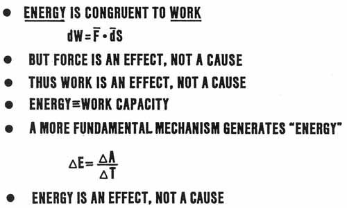

SLIDE 16.
ENERGY IS DERIVED, NOT FUNDAMENTAL

| Energy
is usually taken as "the capacity to do work" at some future
time. In other words, when we refer to the energy of something, we
refer to HOW MUCH WORK IT CAN DO IN THE FUTURE, IF AND WHEN WE ARRANGE
FOR IT TO DO IT. Rigorously, a body has no "work" at a
particular instant in time, so we use "energy" to refer to
potential work that can, or will, be done in the future. Thus
energy is always congruent to work in the future. And for that reason, the units of energy are the units of work; the only difference is in the time the work is done, relative to the "now" or "present" we are speaking of. Energy is the potential for work to be done in the future. But what is work? Well, work is defined in terms of the movement of a force through a distance. And it is understood that only the projection of the force along the line of movement is "working." Thus work is defined differentially as shown on the slide. The differential of work is equal to the dot product of the moving force times the differential of displacement. But as we have seen, force is an effect, not a cause. That is, when we calculate the work done, it's always in the past, never in the present or future. It's always been DONE, and has been expended. Being in the past, it's gone forever, so it certainly isn't the CAUSE of anything which happens in the future. Thus work is an effect, not a cause. That's interesting, because then it certainly does not directly generate "energy," since energy is something in the present which speaks of future work to be done. Rigorously, the fundamental quantum -- which is what exists in the present, in unseparated and unquantized form -- consists of action. NOT energy, NOT time, NOT length, NOT momentum exclusively, but all of these INclusively. And a change in energy occurs when a quantum is separated at a certain rate in time. Thus delta energy equals the time rate of change of action, or delta action divided by the delta time used in separating the quantum and fissioning it into parts (collapsing the wave function). Thus energy itself is an effect or result of a more fundamental mechanism, and it is not a cause. In quantum mechanics all this has been neatly "buried" in the mysterious "collapse of the wave function," which is supposedly what "causes" everything to happen. And then we swear that what results after the collapse is a totally statistical selection from the possible states of the system we are examining. We thus say that the microworld is totally statistical at base. Of course we also build a wave equation or wave function which propagates forward in time with rigorous causality, and that wave or function absolutely controls the basket of "possible states" allowed . All that says is that the "wave function times time" is what exists in the present, when observation has not been made by "stopping time." And then we "stop time" in a rather blunt manner, somewhat like firing a billiard ball blindly into a group of billiard balls on a table, and we live with what gets hit and pops out. If we examine this "time" that is flowing, look into its substructure, and arrange that substructure as we will, we can control which "billiard ball" is hit and which pocket it goes into. By working on the vector substructures of time, we can thus deliberately control the microworld and make it causal, not statistical. Quantum mechanics is in error in stopping where it has; it is presently only a first order approximation of the real quantum mechanics that awaits. Einstein was correct after all; God does NOT play dice with the universe when one considers all levels. One finds oneself in a statistical situation at one level only when the constituent sublevels of it are uncontrolled. |